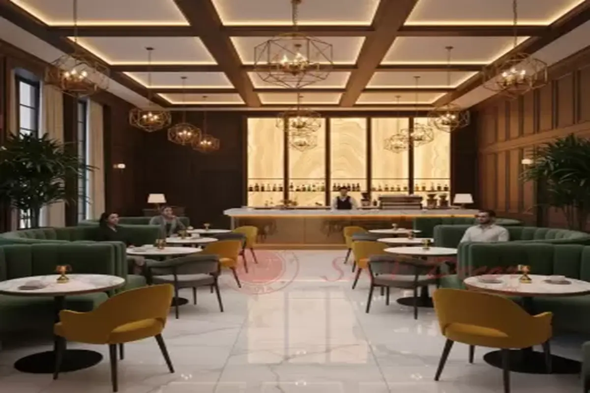

Step into a sanctuary where the aroma of freshly roasted beans mingles with the warmth of genuine hospitality. Our carefully curated space blends rustic heritage with modern comfort, creating an ambiance that invites you to slow down and savor the moment.
From the vintage espresso machine that's been with us since day one to the hand-selected reclaimed wood furnishings, every detail at The Green Bean tells our story of dedication to craft and community. Whether you're catching up with friends, working on your next big idea, or simply enjoying a quiet moment with your favorite brew, you'll find your perfect spot here.
We believe that great coffee is more than just a beverage—it's an experience, a ritual, and a connection point. That's the Green Bean difference.

CUSTOMER FAVORITE
"The perfect blend of comfort and quality. It's my home away from home!"